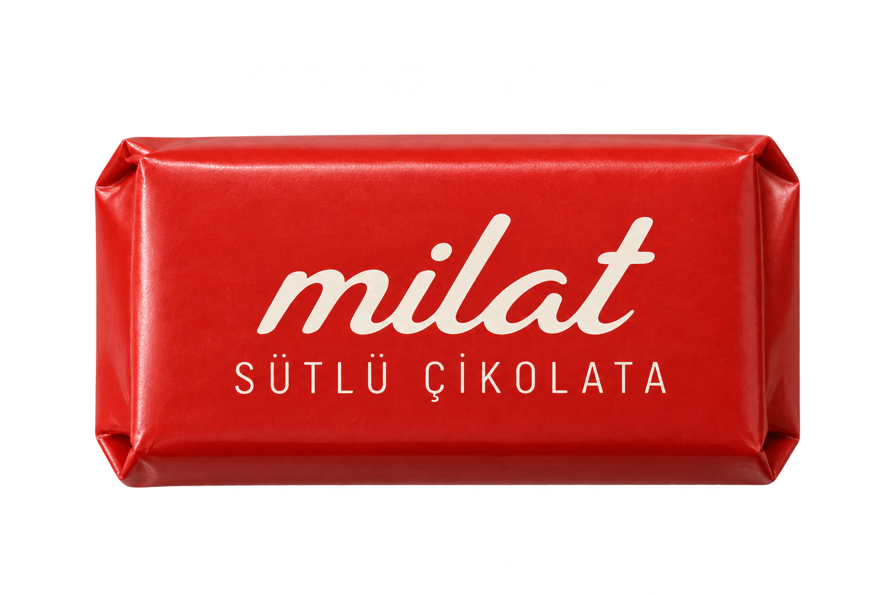
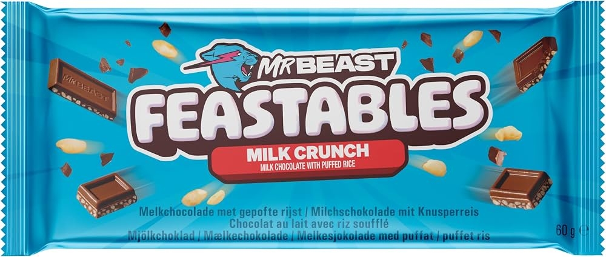

AMAZON KEŞFİ / 01
Özgürlüğe kanat aç.
Dağın zirvesi · İki çırpışta +100 m
ZİRVE 500 m0,00 / 6,00 kmAMAZON ↗
Amazon
seni bekliyor.
Her çırpışta 50 metre yüksel.
Amazon’a dağılmış 240 çikolatayı topla.

+1 puan%75 Milat
−2 puan%25 Feastables PİLOT KAMERASI
Kollarını aç, kontrolü devral.
CANLI TAKİPKOL AÇISI90°
DalışSüzülFren
HIZ0 KT
İRTİFA500 m
UÇUŞ SÜRESİ00:00
Uçuş duraklatıldıDevam etmek için Boşluk tuşuna bas.